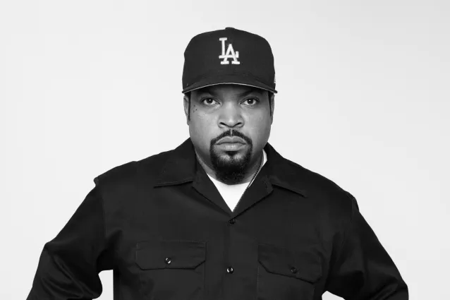

The story of Ice Cube
Ice Cube, whose real name is O'Shea Jackson, was born on June 15, 1969 in South Central, California.
He grew up in the Van Wyck neighborhood of South Central, New York, Queens,
and got his stage name from his older brother who threatened to beat him up
and put him in a freezer and take him out only after he became an Ice Cube
.
The career of the greatest lyricist of the '90s.
Ice Cube is an American rapper, actor, writer, director and film producer.
During his career Ice Cube joined two rap groups, the first with which he made his name
Niggaz Wit Attitudes
better known as N.W.A. he remained in this group from 1987 to 1989,
then he joind another group called Westside Connection
from 1995 to 2005 before leaving it to pursue his solo career in music and film.
The greatest classic of the Hip-Hop/Rap style.
Ice Cube's song It was a good day
is probably his best-known song,
appearing on his third solo album, The Predator, released on 23 February 1993.
The song was a monster hit, peaking at #7 on the Billboard Hot R&B / Hip-Hop songs chart and #27 on the UK Charts. More than this, it was even ranked in the top 100 hip-hop songs of all time and was ranked #352 out of 500 for the best songs of all time.
The song It was a good day
is about a day when everything is normal, no shootings, no one he knows has been killed,
the girl he wants to meet calls him and asks him out,
some police officers walk by but don't call him out, he even ends the song with It was a good day
.
Ice Cube's inspiration.
Ice Cube explained the concept of the song during an interview, speaking that it is a fictional song, which acts as his interpretation of what would be a good day.
Some people have been trying to find that famous day Ice Cube talks about in his song and several clues have been found, but the rapper said that the day described in the song never happened and that it is composed of several different days.
My opinion
What I like about this music is that it's perfect for any time of the day, whether it's in the morning on the way to school or at night when I get home, I get that relaxed euphoric feeling. I think this music is really perfect when you just want to relax and not think about your problems, that's the feeling I get with almost all of Ice Cube's songs.